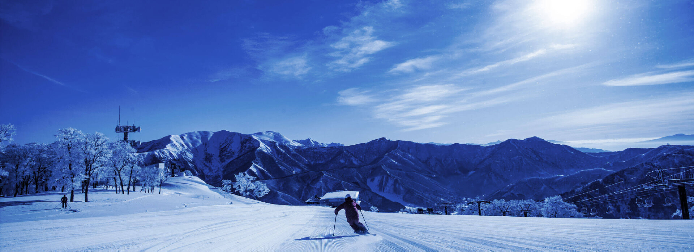
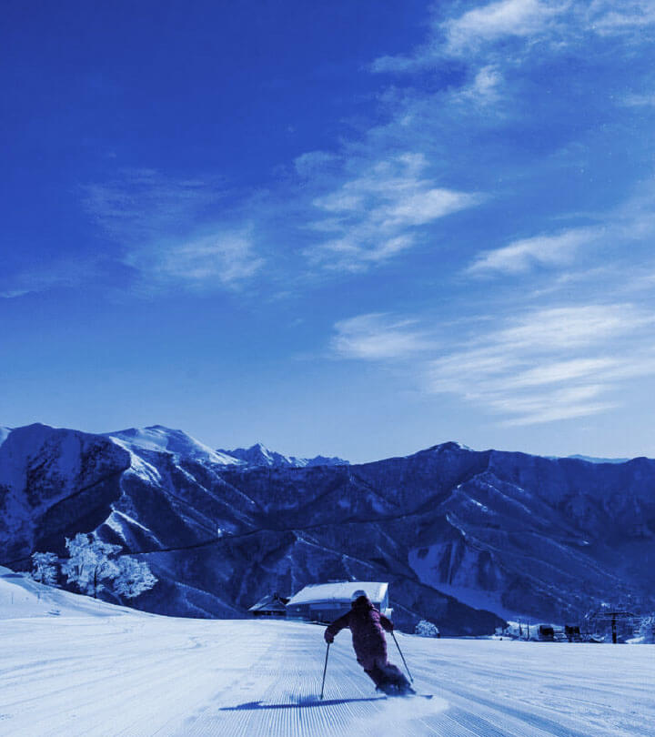
大人のスキースノボ
グレードUPの旅
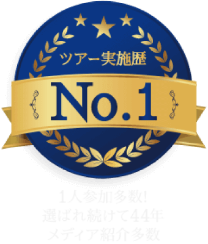
大人のスキーツアー ナイスミドル
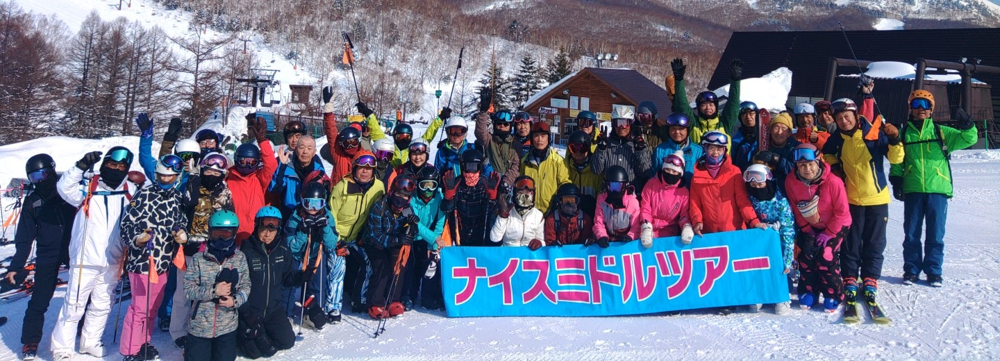
四季スキーとは
日本には四季があり、それぞれの季節ごとにその良さを楽しむことが出来ます。
冬の素晴らしさは、大自然の中の雪。
私たち四季スキーは、「スキーを通して、日本の冬を満喫していただきたい。」と
1977年の創業から約半世紀、スキーツアーを企画・運営してきました。
四季スキーの宿泊バスツアーの魅力は、夜行運行を避けそのままホテルにチェックインできる半泊付コース。
週末の仕事終わりには、座席がゆったり仕様のバスに揺られ、深夜にはホテルに到着、
ゆっくりお風呂に入り布団で休める。そして翌朝は、非日常の景色が広がるゲレンデで
スキー・スノーボードを存分に楽しむ、充実した週末。夜通しバスに揺られ、
翌朝スキー場に到着するなど、スキーバスの嫌なところを解消したツアーです。
ツアー代金は少し高額ですが、大人のスキーツアーを心がけており
ひとり参加の方も多く、趣味を共有した仲間が年々増えております。
四季スキーは添乗員が同行するため、滞在中は一緒に滑ったり夜のお供をしたり
しっかりフォローさせていただきますので、
ぜひ新しい四季スキーの世界に飛び込んできてください。
楽しい大人のスキーライフをお約束いたします。
四季スキーが
選ばれ続ける理由
夜発→スキー場直行、
宿で眠れて楽チン
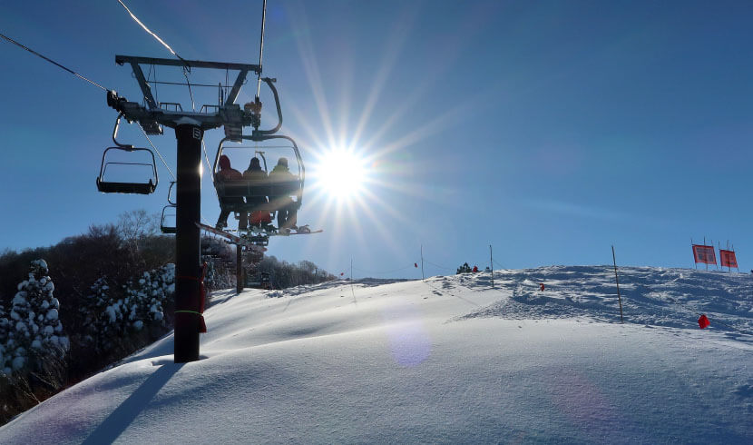
従来は夜出発したら翌朝に到着する夜行ツアーが、四季スキーではダイレクトにホテルに直行して即チェックイン。次の日に備えてお布団でご就寝できます。
ここが違う！四季スキーの特徴
ここが違う！四季スキーの特徴
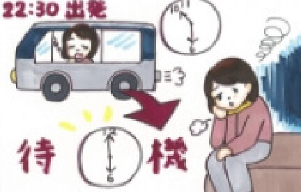
- バス車内泊
-
ゲレンデが開くまで
バス又はロビーで待機 - 食事も自分で調達
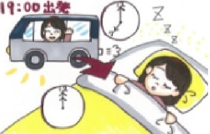
- 19時発で深夜に到着
-
宿でゆっくり眠れるから
次の日元気に滑れる！ - 食事も宿で取れる
席ゆったり仕様の
バスで行ける※1
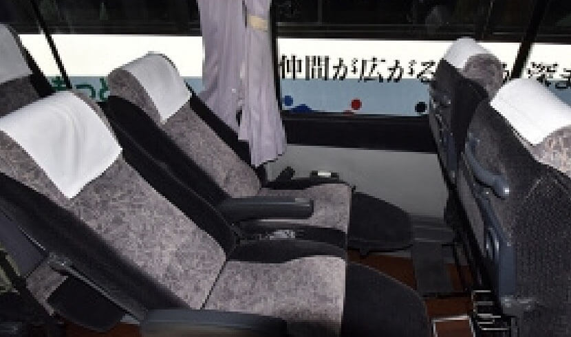
行きも帰りも、通常12列のバス座席を10列にしたゆったり仕様のバス。前後にゆとりがあるので移動が快適です。
※ツアーにより異なります。詳しくはお問合せください。
ここが違う！四季スキーの特徴
ここが違う！四季スキーの特徴
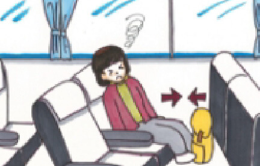
- シートが狭い
- 移動だけで疲れる
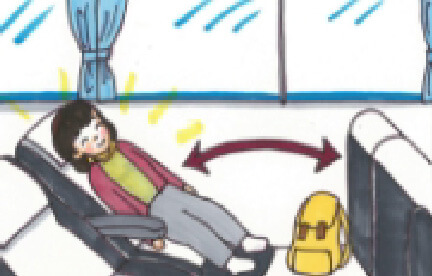
- ゆったりシートで楽ちん
- 移動中もゆっくり休める
大人の参加者が多く
落ち着いて楽しめる
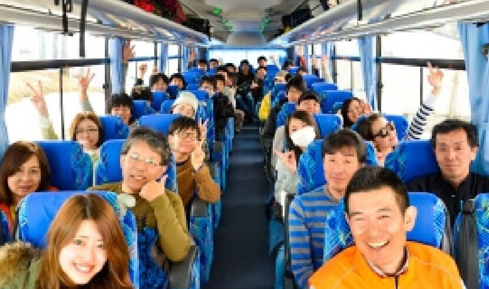
社会人＆ミドル世代が多いので、モラルあるツアー参加者が多い
ここが違う！四季スキーの特徴
ここが違う！四季スキーの特徴
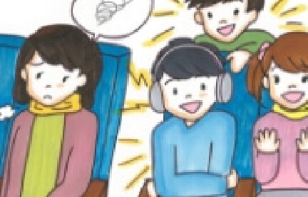
-
学生グループが多く
騒がしい雰囲気 -
若者のエネルギーに
あふれている
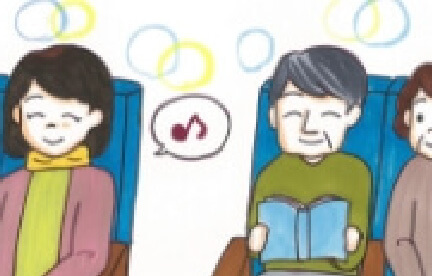
-
大人の参加者が多く
落ち着いた雰囲気 -
シニア層もすぐに
馴染める空気感
到着後にお風呂に入って
ゆっくり寝れる
到着後すぐにチェックインできるので、お風呂に入ってさっぱりしてから就寝可能
ここが違う！四季スキーの特徴
ここが違う！四季スキーの特徴
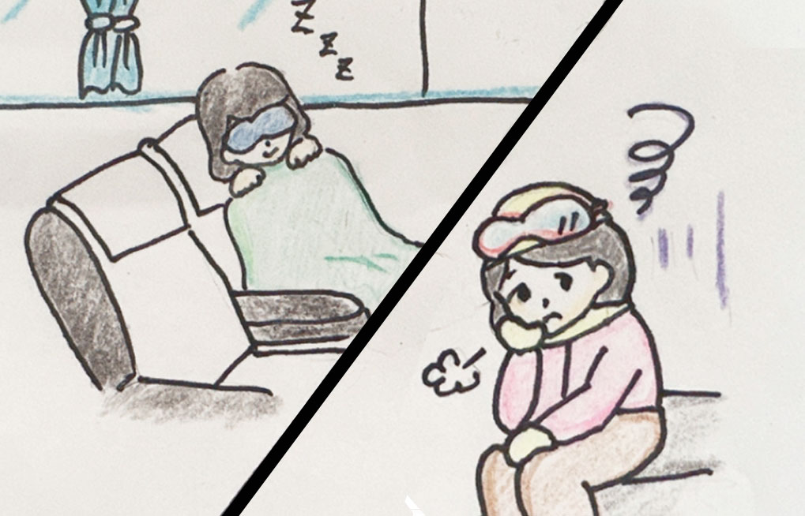
- 車中泊
-
疲れを溜めたまま
次の日を迎える
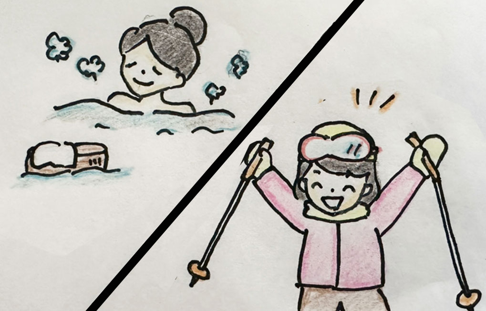
-
お風呂に入って
ゆっくり寝れる -
次の日に備えて
十分に休息が取れる
スキースノボツアーの流れ
週末金曜の夜出発～日曜帰着のコースを例に挙げ、出発から帰宅までの流れをご紹介します。
四季スキーをご検討されている際、ぜひ参考にしてみて下さい。
御茶ノ水を出発後に新宿を経由してスキー場にGO！バスの座席はすべて足元ゆったりシートなので移動中から休める。
※ツアーにより異なります。詳しくはお問合せください。
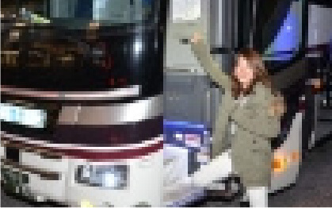
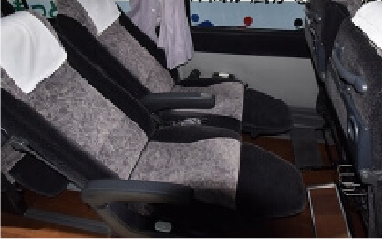
チェックイン
全線高速利用でホテルに直行。バスの中で夕食を済ませて、少しウトウトしたらすぐに到着。宿泊施設に着いたらすぐにチェックインを済ます
各自お部屋でリラックス＆お風呂に入って、気持ちよくベッドの中で眠りにつく
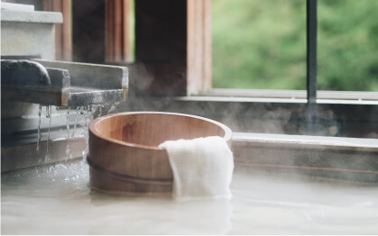
気持ちよくお目覚め♪身支度を済ませて朝ごはんへ。ホテルの朝食も旅行代金にセットされています。
しっかり夜寝たので、疲れ知らずで朝から元気に活動開始。終日存分に楽しみましょう！写真や動画は同行の添乗員にお任せください。
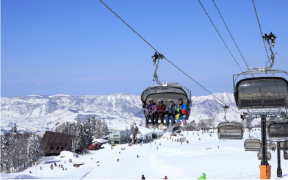
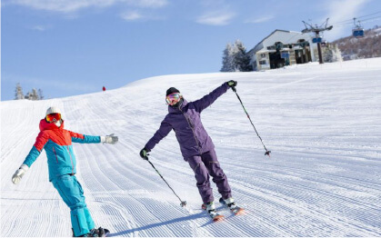
思いっきりスキーやスノーボードを楽しんだ後はホテルに戻って各自お部屋でお風呂に入ったり、仮眠を取ったりしてゆっくり過ごします。
みんなで乾杯！今日１日の滑りを振り返りながら夕食をみんなで囲みます。１人で参加される方もたくさんいらっしゃいますが、和気あいあいとした雰囲気で初めてでもすぐに馴染めます。添乗員がフォローしますのでご安心ください！
※おひとり様のご参加は「ナイスミドル・大人のスキー」のみとなります
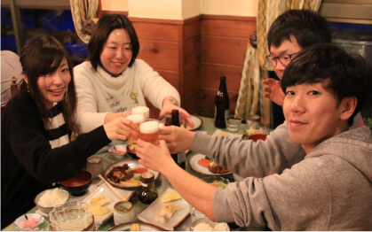
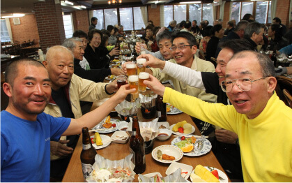
・就寝
夕食のあとは各々自由に過ごす。添乗員が開催する交流会にてさらに親睦を深めるも良し、また明日に備えて早めに休むのもよし。自分の体調に合わせて夜を過ごします。
翌日も朝からゲレンデでスキー・スノボを楽しむ。
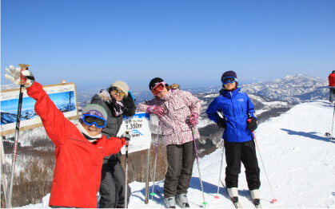
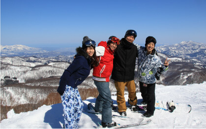
楽しい時間もあっという間。帰りも楽っらくな広々シートのバスで帰れるので疲れていてもリラックスできます
翌日の仕事もあるので少し早めに到着です！お疲れさまでした♪
私たちがサポートします
ご案内するスキー場は
熟知しています
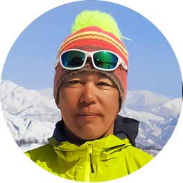
私たち四季スキーのスタッフは全てのスキー場とコースを把握しています。皆さまのレベルに合わせてロングクルージング、非圧雪のコブ、パウダースノーに美味しいゲレンデ食へと、どこへでもご一緒します。アフタースキーは、相部屋の方とお酒を飲みながらスキー談義に盛り上がって下さい。私は皆さまが不安を感じないよう、できる限り目の届く場所にいるよう心がけています。どんなことでも、気軽に話しかけてくださいね！
添乗員のフレンドリーさは
業界NO.1
私はいつもお客様の気持ちになって、笑顔で添乗することを心がけています。みなさまが心地よく過ごし、また仲良くなっていただけるように頑張っています。その甲斐あってか、おひとりで参加されたお客様同士が仲良くなって、次のツアーにお申込みいただく、なんてことも。まずは参加してみてください！きっと楽しいことがありますよ^^
私ももともとはツアー
参加者でした
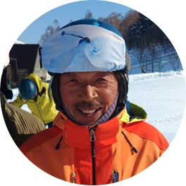
初めてこのツアーに参加した時からこのツアーの魅力にはまり、ツアースタッフになりました。私は難しい雪質や斜面の手前ではワンポイントアドバイスもしています。皆様が安全に楽しんでいただけるように、滑りやすいコースどり、みなさんに合わせたスピードで先導いたします！四季ツアーの魅力は、ゲレンデでもお部屋でもすぐに皆と打ち解けられることです。みなさまとの出会い、楽しみにしております！
救命救急士の資格を持った
元格闘家です
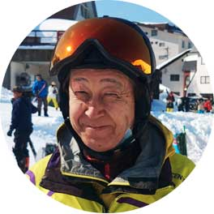
安全第一が大前提！それから遊び心をもつことが私のモットーです。救命救急士の資格を持っておりますので、もし万が一ケガをされるようなことがあっても素早く処置いたしますのでご安心ください。格闘技の経験もありますので、ケガには強いんです（笑）是非、私と一緒に滑りましょう！楽しく、面白く、参考になること山盛りでお待ちしております！
山登りの知識は
スタッフNo.1
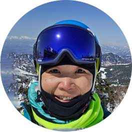
こんにちは！昨シーズンよりツアースタッフデビューしました。毎回、みなさまの情熱・パワーに圧倒されるばかりで、改めてスキーの素晴らしさを感じています。初めて行くスキー場ではご不便をおかけすることもあると思いますが、持ち前の明るさでみなさまが安全で楽しくスキーができるように全力でサポートさせていただきますのでよろしくお願いいたします！夏・冬の山登りも得意としています。
笑顔とお話し好きは
スタッフNo.1
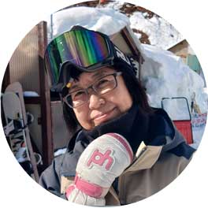
昨シーズンよりツアースタッフとして尾瀬岩鞍、志賀、菅平を担当しました。皆様と一緒にスキ―を滑って、ご飯を食べてのツアーは合宿の様で楽しかったです！皆様にご迷惑をおかけしないようにお仕事もしっかりこなして、スキーも楽しみたいと思いますのでよろしくお願いいたします！
ご参加いただいた
お客様の声
四季スキーは、よくあるスキーツアーと一味も二味も違います。なぜ、他のスキーツアーではなく、
四季ツアーを選んだのか。参加者の方々の声をぜひ、スキーツアー選びの参考にしてください。
和気あいあいとした雰囲気で
楽しく過ごせた！
このプランに大変満足しています。スキーレンタルがお安く利用できるので、このまま続けてほしい。参加している皆さんも和気あいあいで、とても楽しい旅となりました。スキーも思う存分でき大変満足です。
最高に快適なスキーツアー
また是非参加したい！
他社の夜発プランも検討しましたが、バスで着いたあと、布団で眠れることが四季スキーを選んだ理由でした。実際に参加させてもらったのは、体がらくらくなプランだったのでとても快適でした。
とても楽にストレスなく
スキーを楽しめる
金曜夜に出発して、そのまま金曜夜にホテルにチェックインできるため、朝から元気に安全に楽しむことができたのが良かったです。夜行ツアーでバスで朝までゆられるのは体がしんどいので、また四季スキーを利用したいです。
ケガの防止にもなるし
子供も安心できる
大人も子供も休んだ体でスキーができるのがウレシイ。バスも夜行運行が避けられるのであれば、事故の防止にもなるだろうし、寝て滑ることができるので、ゲレンデで滑るときのケガ防止にもなるので助かります。
ひとり参加でも安心
スタッフの気配りに感謝！
添乗員 田澤さんの細かな心配りがとてもよかった。志賀高原にはたくさんのスキー場があり周ることが困難なのに、よく知らない人たちを引導してくれ、楽しく滑ることができました。サンキュー！
次のスノボ旅行も
また楽々プランを利用したい！
新宿を出発してそのままホテルに到着できるのは最高でしたね。とにかく体が楽だし、朝からゲレンデで楽しめて良かった。夜行バスはしんどいので、次もこの半泊付プランを利用したいと思います。
代表土屋が自信を持って
おすすめします
こんにちは、四季倶楽部旅 代表の土屋です。四季倶楽部旅がスタートして約半世紀が経過しました。
私たちのスキーツアーは、従来
の良くある学生向きのスキー
ツアーではなく、「大人のスキー
ツアー」を提唱しています。
長きにわたりスキーツアーを提供し続けてきましたが、その中で、私たちが継続的に行っているのが、お客様の声を聞き続けること。
私は、大学生の時にこの会社で添乗員のアルバイトをすることからこの仕事の魅力に取りつかれ、就職し、今に至ります。スキーが好きだから、もっと魅力が伝わってほしい。その一心でお客様の声を集め続けました。改良に改良を重ね、お客様に満足していただくべく、たどり着いたのがこのたび提供する「大人のスキーツアー」なのです。
学生は安さから、スキーツアーを選びますが、私たち、大人は仲間づくりや快適さも大事な要素になるとおもいます。私たちのツアーはすべてのツアーに添乗員がつきますし、隅々までこだわっています。そのため、ただ安いだけを求めている方にはお喜びいただけないかもしれません。
しかし、内容についてはそれだけの価値を提供できると確信しています。１人参加でも可能です。ぜひ、一度、まずはお試しいただき、ご評価いただけたら嬉しく思います。
よくあるご質問
幅広い年齢層の方にご利用いただいております。
四季スキーのバスツアーは、30代から上は80代までとなっております。
金曜日に出発するプランは、会社が終わって参加される社会人の方が多いため比較的若い一人参加の方が多いですね。
また2～3名のグループからファミリーの方まで様々です。大人のスキーナイスミドルプランの詳細はこちら
詳しくは「四季スキーの特徴」をお読みいただけたらと思いますが、スキーツアーといえば安いという常識を追求せず、私たちは快適さを追求したところです。学生向きというより、大人のスキーツアーを意識したプランになっています。
シーズンによっても異なりますが、毎回30～40名の方にご参加いただいております。
四季スキーの添乗員は「安全を守る」「スムーズにツアーをご案内」それだけではなく「参加される皆様を楽しませる」。
写真を撮影したり、夜は交流会をしたり、皆様が笑顔になるお手伝いをしております。
グループで参加されていても、要所要所で添乗員にお声がけいただければ、旅のサポートをしっかりさせていただきます。
申し訳ございませんが、添乗員が帯同しないスキーツアーのご用意はありません。四季スキーは添乗員のサポート力により、安心してスキーを滑れることがウリなのです。
（マイカープランは添乗員帯同いたしません。）
四季スキーにはスキー・スノーボードに必要な道具一式（板・ストック・ブーツ・ウェア・ゴーグル・グローブ）をオプションで付けることができ、手ぶらでご参加いただけます。四季スキーでは、ワンランク上の道具をご案内しております。